Sixty-seven years of monthly FRED data, six relations that the
macro literature argues about, both directions, lag orders from one month to
eighteen. This is the application the DRGCT was built for: economic mechanisms
operate with long and variable lags, and long lags are exactly where
kernel-smoothing causality tests stop working.
Each relation is a proposition somebody has defended in print.
#
Relation
The claim being tested
1
Fed funds rate → Industrial production
Monetary policy moves real activity — and Friedman (1961) insisted the lags are long and variable, which is precisely what a lag-1 test cannot see.
2
Fed funds rate → CPI inflation
The price leg of monetary transmission, conventionally thought slower than the output leg.
3
M2 money growth → CPI inflation
The quantity theory, stated as a forecasting claim.
4
WTI oil price → CPI inflation
Pass-through of energy supply shocks into the headline basket.
5
WTI oil price → Industrial production
Hamilton's (1983) oil-shock channel. Famously asymmetric — price increases hurt more than decreases help — so a linear test is the wrong instrument by construction.
6
Industrial production → Unemployment rate
Okun's law read dynamically rather than as a contemporaneous regression.
Each is also run in reverse, because a one-directional finding is a much
stronger statement than a feedback loop, and because reverse causality is the
standard objection to any of these claims.
2. Data and transformations
Eight monthly series from the Federal Reserve Bank of St. Louis. Indices,
prices, money and employment enter as 100 × Δlog (monthly growth in per
cent); the two series already measured in per cent — the federal funds rate and
the unemployment rate — enter as first differences.
FRED id
Series
Transformation
Obs.
ADF p
KPSS p
Stationary
INDPRO
Industrial production
100 x dlog
801
0.0000
0.0186
no
CPIAUCSL
CPI inflation
100 x dlog
801
0.0261
0.0100
no
PCEPI
PCE inflation
100 x dlog
801
0.0402
0.0100
no
FEDFUNDS
Fed funds rate
first difference
801
0.0000
0.1000
yes
M2SL
M2 money growth
100 x dlog
801
0.0000
0.0782
yes
UNRATE
Unemployment rate
first difference
801
0.0000
0.1000
yes
PAYEMS
Nonfarm payrolls
100 x dlog
801
0.0000
0.0100
no
WTISPLC
WTI oil price
100 x dlog
801
0.0000
0.1000
yes
Table 1. Series, transformations and stationarity screens. ADF reports the p-value of the unit-root null, KPSS the p-value of the stationarity null. A series is marked stationary only when ADF rejects and KPSS does not.
An honest problem with the pooled sample
Four series — CPI inflation, PCE inflation, industrial production growth and
payroll growth — fail the KPSS screen on the full sample even though ADF
rejects the unit root. Assumption 1 of the paper requires strict stationarity,
so the pooled results below are on shakier ground than the sub-sample results.
The failure is not mysterious. It is the Great Moderation: the mean and
variance of US inflation and output growth shift around 1984, and KPSS with a
constant reads a level shift as non-stationarity. Split the sample and the
screen behaves — CPI inflation has KPSS p = 0.083 within 1984–2025
against 0.010 pooled. That is one more reason to take
Section 4 more seriously
than Section 3.
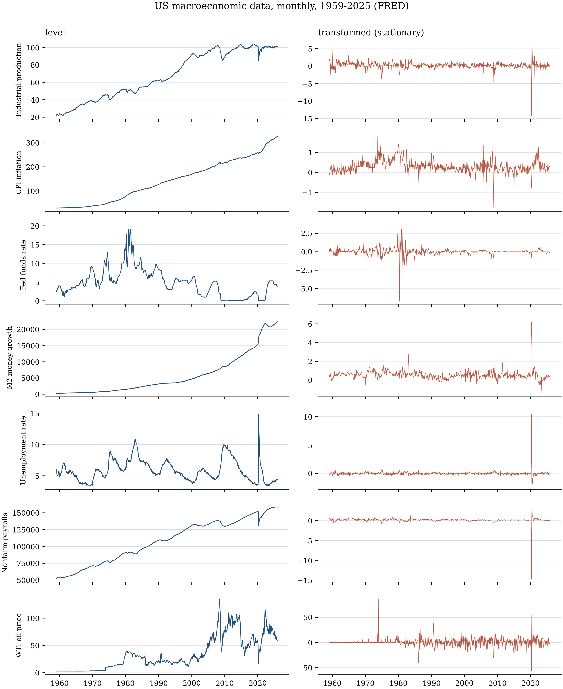
Figure 1. The six series used in the tests, in levels (left) and after transformation (right). The transformed series are what the test actually sees. The volatility break around 1984 is visible in industrial production and inflation.
Statistic
Industrial production
CPI inflation
PCE inflation
Fed funds rate
M2 money growth
Unemployment rate
Nonfarm payrolls
WTI oil price
Obs.
801.000
801.000
801.000
801.000
801.000
801.000
801.000
801.000
Mean
0.192
0.302
0.266
0.002
0.543
-0.002
0.138
0.378
Median
0.233
0.262
0.230
0.000
0.522
0.000
0.156
0.000
Std. dev.
0.990
0.311
0.245
0.492
0.459
0.428
0.582
8.268
Min.
-14.142
-1.786
-1.187
-6.630
-1.412
-2.200
-14.578
-56.813
Max.
6.347
1.794
1.221
3.060
6.223
10.400
3.422
85.259
Skewness
-3.709
0.283
0.492
-2.413
3.941
17.691
-19.982
0.726
Kurtosis
61.740
7.387
6.005
53.964
44.765
439.957
513.730
25.395
Jarque-Bera
116994.324
653.052
333.735
87463.813
60289.907
6414110.351
8759001.618
16808.950
JB p-value
0.000
0.000
0.000
0.000
0.000
0.000
0.000
0.000
Ljung-Box(10)
93.825
1559.568
2403.082
201.019
898.139
9.826
19.903
56.752
LB p-value
0.000
0.000
0.000
0.000
0.000
0.456
0.030
0.000
Ljung-Box$^2$(10)
40.573
1598.694
2657.808
258.047
339.521
3.044
2.731
77.117
LB$^2$ p-value
0.000
0.000
0.000
0.000
0.000
0.980
0.987
0.000
ADF p-value
0.000
0.026
0.040
0.000
0.000
0.000
0.000
0.000
KPSS p-value
0.019
0.010
0.010
0.100
0.078
0.100
0.010
0.100
Table 2. Descriptive statistics. Ljung–Box statistics use 10 lags; all six series are strongly serially correlated in the level and in the square, which is why the conditional mean m(Y(t−1)) is a non-trivial object.
3. Results: the pooled sample
Hyper-parameters: G = 10 mixture components, M = 20 pseudo-samples,
B = 999 bootstrap replications, Rademacher multipliers. L is raised from
the paper's 20 to 60 random directions, because at lag 18 the conditioning
set has p + q = 36 dimensions and twenty directions cover that space far too
thinly — see the guide's §5.4.
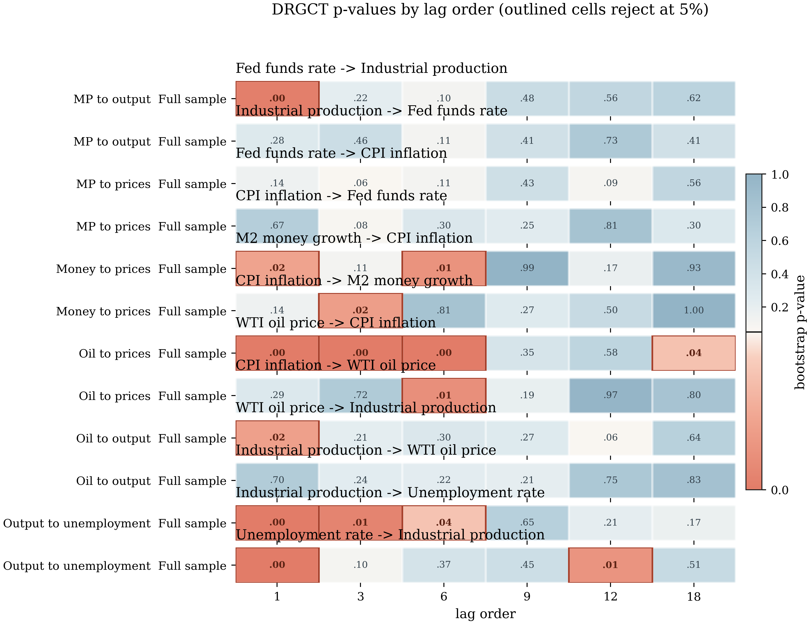
Figure 2. Bootstrap p-values for all twelve directed relations at six lag orders. Outlined cells reject the null of non-causality at 5%. Warm cells are rejections; cool cells are not.
Causality direction
Index
Period
1
3
6
9
12
18
CPI inflation -> Fed funds rate
MP to prices
Full sample
0.672
0.079
0.304
0.246
0.811
0.296
CPI inflation -> M2 money growth
Money to prices
Full sample
0.144
0.019
0.814
0.268
0.497
0.997
CPI inflation -> WTI oil price
Oil to prices
Full sample
0.291
0.716
0.011
0.187
0.975
0.801
Fed funds rate -> CPI inflation
MP to prices
Full sample
0.143
0.059
0.106
0.431
0.089
0.560
Fed funds rate -> Industrial production
MP to output
Full sample
0.002
0.217
0.104
0.477
0.559
0.616
Industrial production -> Fed funds rate
MP to output
Full sample
0.283
0.455
0.105
0.407
0.735
0.407
Industrial production -> Unemployment rate
Output to unemployment
Full sample
0.000
0.005
0.037
0.647
0.207
0.165
Industrial production -> WTI oil price
Oil to output
Full sample
0.702
0.241
0.224
0.211
0.750
0.833
M2 money growth -> CPI inflation
Money to prices
Full sample
0.022
0.105
0.013
0.988
0.173
0.929
Unemployment rate -> Industrial production
Output to unemployment
Full sample
0.000
0.097
0.374
0.449
0.014
0.510
WTI oil price -> CPI inflation
Oil to prices
Full sample
0.000
0.000
0.000
0.349
0.584
0.036
WTI oil price -> Industrial production
Oil to output
Full sample
0.020
0.214
0.303
0.267
0.062
0.640
Table 3. Bootstrap p-values by lag order, pooled sample.
What the pooled sample says
Oil prices Granger-cause inflation, decisively and at every short horizon.p < 0.001 at one, three and six months, and still 0.036 at eighteen. This is
the strongest result on the page, and it survives the robustness check in
Section 6 — all thirty independent direction
draws reject. The reverse direction is significant at a single lag out of six,
which is what you would expect by chance.
Industrial production Granger-causes unemployment.p < 0.001, 0.005 and
0.037 at one, three and six months: Okun's law holds as a dynamic forecasting
statement, not merely as a contemporaneous correlation. Note that unemployment
also predicts industrial production at lag 1 — genuine two-way feedback at the
monthly frequency, as two cyclical variables should show.
Money growth predicts inflation at short and medium horizons.p = 0.022
at one month and 0.013 at six. Not overwhelming, but the quantity theory is not
dead in the data.
Monetary policy is the weak case here — and that is the interesting part.
The federal funds rate predicts industrial production at one month
(p = 0.002) and then nothing out to eighteen. It never predicts inflation at
conventional levels in the pooled sample. Before concluding that monetary
policy does not work, read Section 4: pooling 1959–2025 pools two entirely
different monetary regimes.
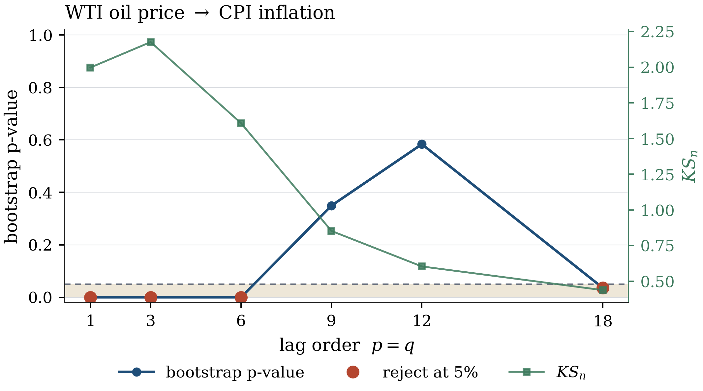
Figure 3a. Oil prices to CPI inflation. The p-value (blue, left axis) sits in the rejection band out to six months; KS_n (green, right axis) tracks it.
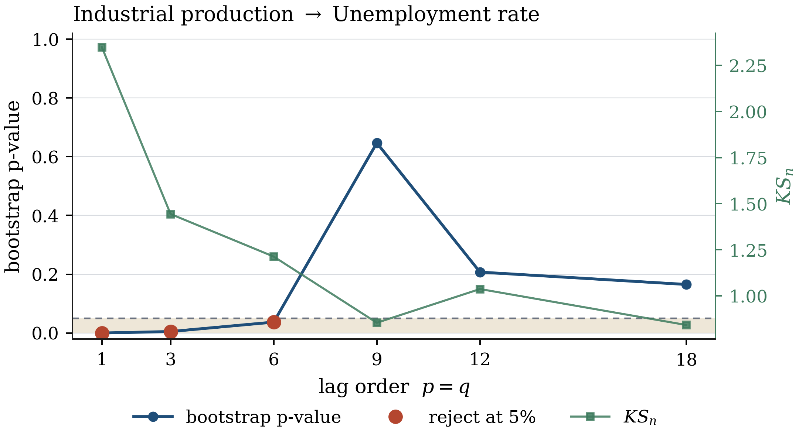
Figure 3b. Industrial production to unemployment — Okun's law, decaying with horizon exactly as one would hope.
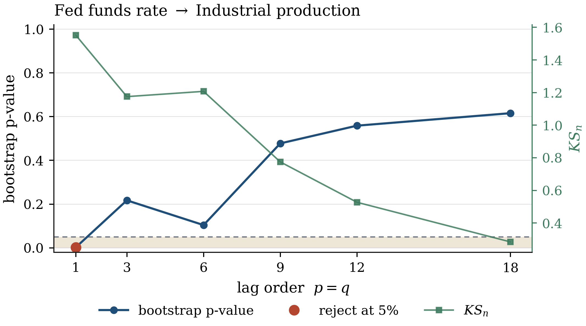
Figure 3c. Federal funds rate to industrial production, pooled sample. Significant at one month, then flat. Compare with the sub-sample split below.
4. Before and after the Great Moderation
The pooled sample runs across a structural break that almost everyone
recognises: US output growth and inflation become dramatically less volatile
after about 1984 (McConnell and Perez-Quiros, 2000; Stock and Watson, 2002),
and monetary policy operates under a different reaction function. Testing the
three monetary relations separately in the two eras is not a robustness check —
it is the right specification.
Causality direction
Index
Period
3
6
12
CPI inflation -> Fed funds rate
MP to prices
Great Inflation 1959-1983
0.025
0.671
0.931
CPI inflation -> Fed funds rate
MP to prices
Great Moderation 1984-2025
0.083
0.117
0.453
CPI inflation -> M2 money growth
Money to prices
Great Inflation 1959-1983
0.350
0.631
0.638
CPI inflation -> M2 money growth
Money to prices
Great Moderation 1984-2025
0.000
0.615
0.584
Fed funds rate -> CPI inflation
MP to prices
Great Inflation 1959-1983
0.110
0.496
0.806
Fed funds rate -> CPI inflation
MP to prices
Great Moderation 1984-2025
0.048
0.154
0.446
Fed funds rate -> Industrial production
MP to output
Great Inflation 1959-1983
0.018
0.078
0.056
Fed funds rate -> Industrial production
MP to output
Great Moderation 1984-2025
0.283
0.033
0.942
Industrial production -> Fed funds rate
MP to output
Great Inflation 1959-1983
0.445
0.208
0.316
Industrial production -> Fed funds rate
MP to output
Great Moderation 1984-2025
0.002
0.117
0.858
M2 money growth -> CPI inflation
Money to prices
Great Inflation 1959-1983
0.361
0.077
0.755
M2 money growth -> CPI inflation
Money to prices
Great Moderation 1984-2025
0.754
0.596
0.296
Table 4. The three monetary relations, Great Inflation (1959–1983, n ≈ 299) versus Great Moderation (1984–2025, n ≈ 502).
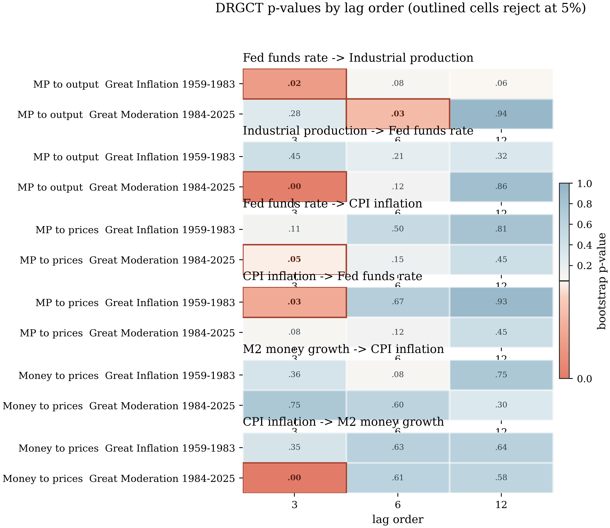
Figure 4. The same numbers as a heat map. The story is in the top block: monetary policy to output.
Monetary transmission to output was detectable in the Great Inflation era and
is weaker afterwards. In 1959–1983 the federal funds rate predicts industrial
production at three months (p = 0.018), with borderline evidence at six
(0.078) and twelve (0.056). In 1984–2025 only the six-month horizon rejects
(0.033). Pooling the two eras is what produced the flat profile in Figure 3c.
The price leg appears only in the Great Moderation (p = 0.048 at three
months), and even then it is marginal.
Money to prices weakens. Borderline at six months in the Great Inflation
(p = 0.077), nothing in the Great Moderation. Consistent with the standard
account of money-demand instability and the decline of monetary aggregates as
policy indicators after the early 1980s.
Reverse causality shows up where you would expect it. Inflation predicts
the federal funds rate at three months in the Great Inflation era (p = 0.025)
and industrial production predicts the federal funds rate at three months in
the Great Moderation (p = 0.002) — that is the policy reaction function
being picked up, not policy transmission. Granger causality is symmetric in the
statistical sense; only economics tells you which arrow is a mechanism and
which is a reaction.
5. Three tests, the same data
Every relation was also run through a textbook linear VAR F-test and through
the smoothing-based nonparametric benchmark that the paper compares against.
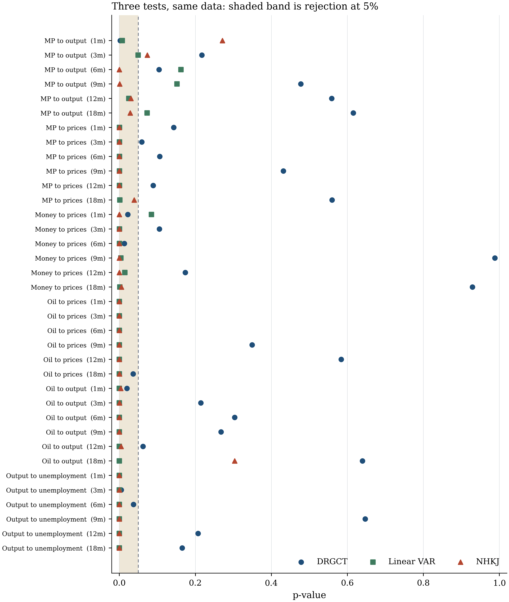
Figure 5. p-values from the three tests for each relation and lag order. Shaded band is rejection at 5%. Blue circles: DRGCT. Green squares: linear VAR F-test. Terracotta triangles: smoothing benchmark.
Relation
Lag
DRGCT
Linear VAR
NHKJ
MP to output
1
0.0020
0.0074
0.2711
MP to output
3
0.2172
0.0491
0.0735
MP to output
6
0.1041
0.1618
0.0000
MP to output
9
0.4775
0.1516
0.0009
MP to output
12
0.5586
0.0250
0.0304
MP to output
18
0.6156
0.0732
0.0282
MP to prices
1
0.1431
0.0002
0.0000
MP to prices
3
0.0591
0.0002
0.0000
MP to prices
6
0.1061
0.0002
0.0000
MP to prices
9
0.4314
0.0002
0.0000
MP to prices
12
0.0891
0.0004
0.0000
MP to prices
18
0.5596
0.0011
0.0390
Money to prices
1
0.0220
0.0842
0.0000
Money to prices
3
0.1051
0.0001
0.0000
Money to prices
6
0.0130
0.0003
0.0000
Money to prices
9
0.9880
0.0037
0.0000
Money to prices
12
0.1732
0.0142
0.0000
Money to prices
18
0.9289
0.0011
0.0054
Oil to prices
1
0.0000
0.0000
0.0000
Oil to prices
3
0.0000
0.0000
0.0000
Oil to prices
6
0.0000
0.0000
0.0000
Oil to prices
9
0.3493
0.0000
0.0000
Oil to prices
12
0.5836
0.0000
0.0000
Oil to prices
18
0.0360
0.0000
0.0001
Oil to output
1
0.0200
0.0000
0.0036
Oil to output
3
0.2142
0.0000
0.0002
Oil to output
6
0.3033
0.0000
0.0000
Oil to output
9
0.2673
0.0000
0.0000
Oil to output
12
0.0621
0.0000
0.0043
Oil to output
18
0.6396
0.0000
0.3035
Output to unemployment
1
0.0000
0.0000
0.0000
Output to unemployment
3
0.0050
0.0000
0.0000
Output to unemployment
6
0.0370
0.0000
0.0000
Output to unemployment
9
0.6466
0.0000
0.0000
Output to unemployment
12
0.2072
0.0000
0.0000
Output to unemployment
18
0.1652
0.0000
0.0000
Table 5. The same comparison in numbers.
How to read this comparison
The DRGCT is the most conservative of the three, and that deserves an
explanation rather than a boast. US macro series are strongly and
linearly predictable, and with n ≈ 800 the linear F-test has
enormous power against exactly the alternative it was built for. It rejects
almost everywhere. The smoothing benchmark also rejects almost everywhere, but
in our runs it is not size-controlled at these conditioning dimensions
(see the simulation page), so its column is not
evidence of anything.
The right reading of a DRGCT non-rejection at, say, twelve months is
therefore: no evidence of predictive content beyond what the effect's own
twelve-month history already carries — not "no relationship". The DRGCT
conditions on a twelve-dimensional own-past nonparametrically, which is a much
harder benchmark to beat than the linear test's twelve coefficients.
Where the DRGCT rejects and the linear test does not — money to prices at
one month is the clearest case — you have evidence of genuinely nonlinear
predictive content.
6. Is the headline a lucky draw?
The strongest result is oil prices to CPI inflation at one month. Before
reporting it, it should survive the random draw of evaluation directions
described in the guide's §5.8.
Relation
Lag
Median p
5th pct
95th pct
Share rejecting
Merged p
WTI oil price -> CPI inflation
1
0.0
0.0
0.001
1.0
0.0
Table 6. The headline re-run over thirty independent draws of the L = 60 directions and of the network initialisation, data held fixed.
It does, emphatically: all thirty draws reject, the median p-value is below
0.001, and the merged (conservative) p-value is 0.000. Contrast this with the
price–volume application, where the corresponding check found only 7% of draws
rejecting — that is the difference between a real effect and a lucky seed.
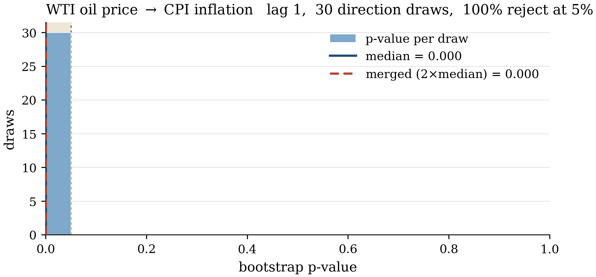
Figure 6. Distribution of the p-value across thirty direction draws. Everything is in the rejection band.
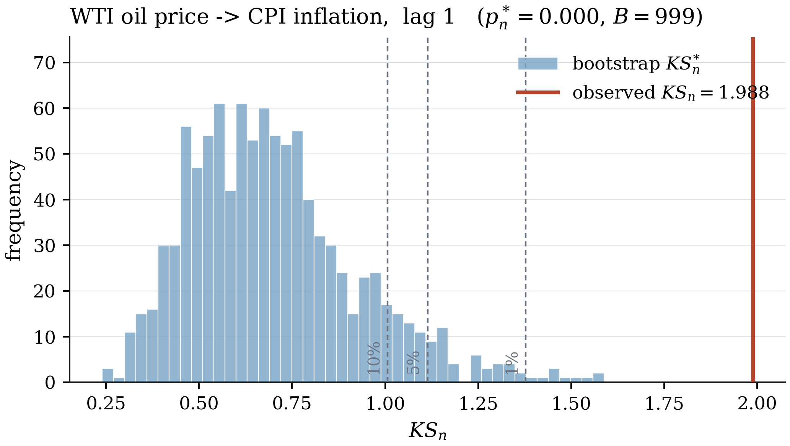
Figure 7. The bootstrap null distribution of KS_n for the headline test, with the observed statistic in terracotta. This is the figure that makes a p-value auditable.
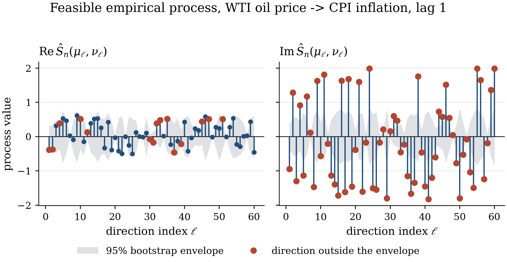
Figure 8. Real and imaginary parts of the empirical process at each of the sixty random directions, against the pointwise bootstrap envelope. Many directions escape the band — the departure from the null is broad, not an artefact of one lucky direction. Compare this with the price–volume case, where exactly one direction of twenty escaped.
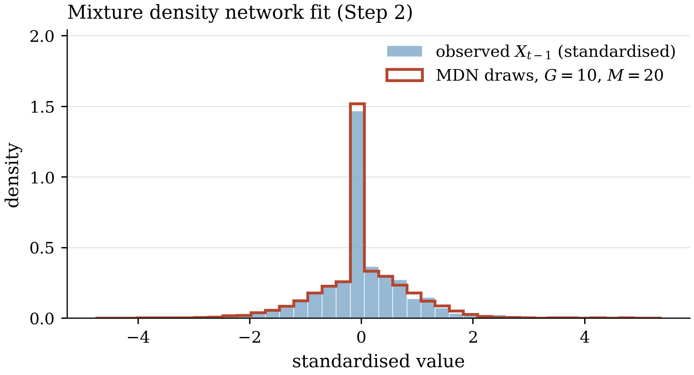
Figure 9. Mixture density network diagnostic: pooled draws from the fitted conditional density against the empirical marginal of the lagged cause. A visible mismatch here would mean G is too small and the type I error is inflated.
7. Caveats
Five things to hold in mind
Stationarity. Four of the eight transformed series fail the KPSS screen
on the pooled sample. The sub-sample results in Section 4 rest on firmer ground
than the pooled results in Section 3.
Multiple testing. Section 3 is 72 tests at the 5% level; roughly four
false rejections are expected by chance. The argument here rests on
patterns — consistent significance across adjacent lag orders and across
sub-samples — not on any single cell. Apply Holm or Benjamini–Hochberg within a
direction if you need a formal correction.
Bivariate only. Every test conditions on two series. Oil prices and
inflation both respond to global demand; monetary policy and output both respond
to fiscal shocks. Version 1.0 of the package cannot condition on a third series,
which the paper itself flags as future work.
Granger, not structural. These are forecasting statements. They say
nothing about what would happen under an intervention.
Real-time versus revised. FRED serves revised data. A forecaster in
1975 did not see these numbers. Nothing here is a claim about real-time
predictability.
8. Reproducing and extending
# the full study, about ten minutes on twelve cores
pythonscripts/run_macro_application.py--jobs-1
# a coarser, faster pass
pythonscripts/run_macro_application.py--lags13612--skip-subsamples--jobs-1
# refresh the FRED data or add series
pythondata/fetch_macro.py--addGDPC1TB3MS
The whole grid, including your own series, is one call:
fromdrgct.applicationsimportmacro_studydf=macro_study(relations=[("M2 money growth","Nonfarm payrolls","Money to jobs","")],periods=["Full sample"],lags=[1,6,12],drgc_kwargs=dict(L=60,B=999),n_jobs=-1,)
Data source
All series from FRED, Federal Reserve Bank of St. Louis, downloaded by
data/fetch_macro.py
and bundled with the package so that everything here runs offline. Provenance
is recorded in
src/drgct/data/SOURCES_MACRO.md.
FRED series are in the public domain unless an individual series page says
otherwise.
References
Friedman, M. (1961). The lag in effect of monetary policy. Journal of Political Economy 69, 447–466.
Hamilton, J. D. (1983). Oil and the macroeconomy since World War II. Journal of Political Economy 91, 228–248.
Hui, Y., Liu, C. and Song, X. (2025). Deep learning based doubly robust test for Granger causality.arXiv:2509.15798.
McConnell, M. M. and Perez-Quiros, G. (2000). Output fluctuations in the United States: what has changed since the early 1980's? American Economic Review 90, 1464–1476.
Okun, A. M. (1962). Potential GNP: its measurement and significance. Proceedings of the Business and Economic Statistics Section, American Statistical Association.
Stock, J. H. and Watson, M. W. (2002). Has the business cycle changed and why? NBER Macroeconomics Annual 17, 159–218.